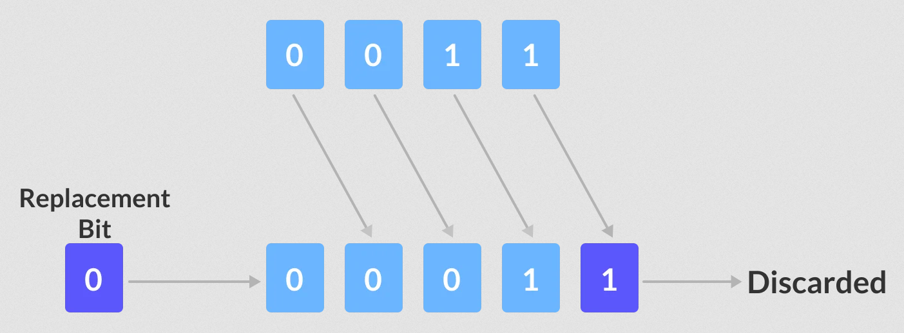

In C++, bitwise operators perform operations on integer data at the individual bit-level. These operations include testing, setting, or shifting the actual bits.
For example
a & b;
a | b;
Here is a list of 6 bitwise operators included in C++.
| Operator | Description |
|---|---|
& |
Bitwise AND Operator |
| |
Bitwise OR Operator |
^ |
Bitwise XOR Operator |
~ |
Bitwise Complement Operator |
<< |
Bitwise Shift Left Operator |
>> |
Bitwise Shift Right Operator |
These operators are necessary because the Arithmetic-Logic Unit (ALU) present in the computer's CPU carries out arithmetic operations at the bit-level.
Note: Bitwise operators can only be used alongside char and int data types.
Bitwise AND Operator
The bitwise AND & operator returns 1 if and only if both the operands are 1. Otherwise, it returns 0.
The following truth table demonstrates the working of the bitwise AND operator. Let a and b be two operands that can only take binary values i.e. 1 and 0.
| a | b | a & b |
|---|---|---|
| 0 | 0 | 0 |
| 0 | 1 | 0 |
| 1 | 0 | 0 |
| 1 | 1 | 1 |
Let's take a look at the bitwise AND operation of two integers 12 and 25:
12 = 00001100 (In Binary)
25 = 00011001 (In Binary)
Bitwise AND Operation of 12 and 25
00001100
& 00011001
_________
00001000 = 8 (In decimal)
Example 1: Bitwise AND
#include <iostream>
using namespace std ;
int main ()
{
// declare variables
int a = 12 , b = 25 ;
cout << "a = " << a << endl ;
cout << "b = " << b << endl ;
cout << "a & b = " << (a & b) << endl ;
return 0 ;
}
a = 12
b = 25
a & b = 8
Bitwise OR Operator
The bitwise OR | operator returns 1 if at least one of the operands is 1. Otherwise, it returns 0.
The following truth table demonstrates the working of the bitwise OR operator. Let a and b be two operands that can only take binary values i.e. 1 and 0.
| a | b | a | b |
|---|---|---|
| 0 | 0 | 0 |
| 0 | 1 | 1 |
| 1 | 0 | 1 |
| 1 | 1 | 1 |
Let's take a look at the bitwise OR operation of two integers 12 and 25:
12 = 00001100 (In Binary)
25 = 00011001 (In Binary)
Bitwise OR Operation of 12 and 25
00001100
| 00011001
_________
00011101 = 29 (In decimal)
Example 2: Bitwise OR
#include <iostream>
using namespace std ;
int main ()
{
int a = 12 , b = 25 ;
cout << "a = " << a << endl ;
cout << "b = " << b << endl ;
cout << "a | b = " << (a | b) << endl ;
return 0 ;
}
a = 12
b = 25
a | b = 29
Bitwise XOR Operator
The bitwise XOR ^ operator returns 1 if and only if one of the operands is 1. However, if both the operands are 0, or if both are 1, then the result is 0.
The following truth table demonstrates the working of the bitwise XOR operator. Let a and b be two operands that can only take binary values i.e. 1 and 0.
| a | b | a ^ b |
|---|---|---|
| 0 | 0 | 0 |
| 0 | 1 | 1 |
| 1 | 0 | 1 |
| 1 | 1 | 0 |
Let's take a look at the bitwise XOR operation of two integers 12 and 25:
12 = 00001100 (In Binary)
25 = 00011001 (In Binary)
Bitwise XOR Operation of 12 and 25
00001100
^ 00011001
_________
00010101 = 21 (In decimal)
Example 3: Bitwise XOR
#include <iostream>
using namespace std ;
int main ()
{
int a = 12 , b = 25 ;
cout << "a = " << a << endl ;
cout << "b = " << b << endl ;
cout << "a ^ b = " << (a ^ b) << endl ;
return 0 ;
}
a = 12
b = 25
a ^ b = 21
Bitwise Complement Operator
The bitwise complement operator is a unary operator (works on only one operand). It is denoted by ~ that changes binary digits 1 to 0 and 0 to 1.
It is important to note that the bitwise complement of any integer N is equal to -(N + 1).
For example, consider an interger 35. As per the rule, the bitwise complement of 35 should be -(35 + 1) = -36. Now, let's see if we get the correct answer or not.
35 = 00100011 (In Binary)
Using bitwise complement operator
~ 00100011
__________
11011100
In the above example, we get that the bitwise complement of 00100011 (35) is 11011100. Here, if we convert the result into decimal we get 220.
However, it is important to note that we cannot directly convert the result into decimal and get the desired output. This is because the binary result 11011100 is also equivalent to -36.
To understand this we first need to calculate the binary output of -36. We use 2's complement to calculate the binary of negative integers.
2's Complement
The 2's complement of a number N gives -N.
In binary arithmetic, 1's complement changes 0 to 1 and 1 to 0.
And, if we add 1 to the result of the 1's complement, we get the 2's complement of the original number.
For example
36 = 00100100 (In Binary)
1's Complement = 11011011
2's Complement :
11011011
+ 1
_________
11011100
Here, we can see the 2's complement of 36 (i.e. -36) is 11011100. This value is equivalent to the bitwise complement of 35 that we have calculated in the previous section.
Hence, we can say that the bitwise complement of 35 = -36.
#include <iostream>
using namespace std ;
int main ()
{
int num1 = 35 ;
int num2 = -150 ;
cout << "~(" << num1 << ") = " << (~num1) << endl ;
cout << "~(" << num2 << ") = " << (~num2) << endl ;
return 0 ;
}
~(35) = -36
~(-150) = 149
Shift Operators
There are two shift operators in C++:
- Right shift operator
>> - Left shift operator
<<
Right Shift Operator
The right shift operator shifts all bits towards the right by a certain number of specified bits. It is denoted by >>.
When we shift any number to the right, the least significant bits are discarded, while the most significant bits are replaced by zeroes.
As we can see from the image above, we have a 4-bit number. When we perform a one-bit right shift operation on it, each individual bit is shifted to the right by 1 bit.
As a result, the right-most bit is discarded, while the left-most bit remains vacant. This vacancy is replaced by a 0.
Left Shift Operator
The left shift operator shifts all bits towards the left by a certain number of specified bits. It is denoted by <<.
As we can see from the image above, we have a 4-bit number. When we perform a one-bit left shift operation on it, each individual bit is shifted to the left by 1 bit.
As a result, the left-most bit is discarded, while the right-most bit remains vacant. This vacancy is replaced by a 0.
Example 5: Shift Operators
#include <iostream>
using namespace std ;
int main ()
{
// declaring two integer variables
int num = 212 ;
// Shift Right Operation
cout << "Shift Right:" << endl ;
// Using for loop for shifting num right from 0 bit to 3 bits
for (int i = 0 ; i < 4 ; i++) {
cout << "212 >> " << i << " = " << (212 >> i) << endl ;
}
// Shift Left Operation
cout << "\nShift Left:" << endl ;
// Using for loop for shifting num left from 0 bit to 3 bits
for (int i = 0 ; i < 4 ; i++) {
cout << "212 << " << i << " = " << (212 << i) << endl ;
}
return 0 ;
}
Shift Right:
212 >> 0 = 212
212 >> 1 = 106
212 >> 2 = 53
212 >> 3 = 26
Shift Left:
212 << 0 = 212
212 << 1 = 424
212 << 2 = 848
212 << 3 = 1696
From the output of the program above, we can infer that, for any number N, the results of the shift right operator are:
N >> 0 = N
N >> 1 = (N >> 0) / 2
N >> 2 = (N >> 1) / 2
N >> 3 = (N >> 2) / 2
Similarly, the results of the shift left operator are:
N << 0 = N
N << 1 = (N << 0) * 2
N << 2 = (N << 1) * 2
N << 3 = (N << 2) * 2
Hence, we can conclude that
N >> m = [ N >> (m-1) ] / 2
N << m = [ N << (m-1) ] * 2
In the above example, note that the int data type stores numbers in 32-bits i.e. an int value is represented by 32 binary digits.
However, our explanation for the bitwise shift operators used numbers represented in 4-bits.
For example, the base-10 number 13 can be represented in 4-bit and 32-bit as:
4-bit Representation of 13 = 1101
32-bit Representation of 13 = 00000000 00000000 00000000 00001101
As a result, the bitwise left-shift operation for 13 (and any other number) can be different depending on the number of bits they are represented by.
Because in 32-bit representation, there are many more bits that can be shifted left when compared to 4-bit representation.